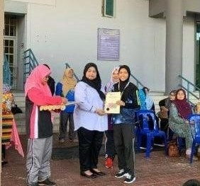

One of my favorite hobbies since I'm in primary school. This is because I had won once in ‘mental desa’ and got the number 10, it is funny actually that it has become my favorite hobby because of this. But I kept joining all the school tournaments until I got number 1. My running categories are 100 meter and 200 meters.
Actually, before I won this, I hated running, because I had asthma, my parents really tried hard to let me try this activity, but I ended up loving it. Yeah I had asthma, but I can jog and run, it never defects me. My asthma will attack if I smell smoke only.
But when I remember this, I think I love running since I'm still a kid. This is because my dad always tells me that I love chasing Crow birds.
It is sad when I need to stop running, I can't run anymore for the tournament. This is because I got injured in my knees. When I'm running I will get hurt and they said I couldn't run anymore.
But I still go jogging when my boyfriend invites me to accompany him and sometimes with my mother when she wants to diet.